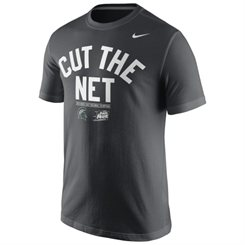

I enjoy playing computer games like World of Warcraft or Everquest. Sports are also a big part of my life especially MSU sports. I grew up playing soccer, football, and baseball. As well as non-team sports like surfing and snowboarding. I am currently training for my first triathlon.

This is a link to my Resume